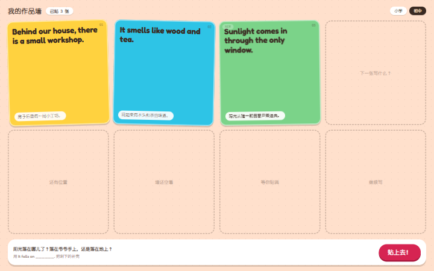
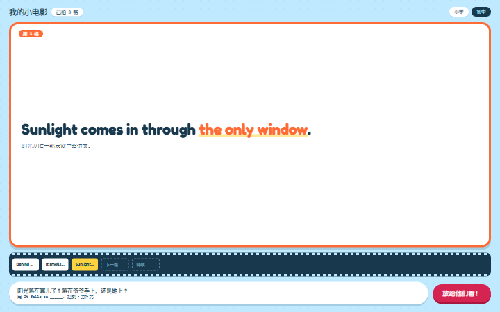
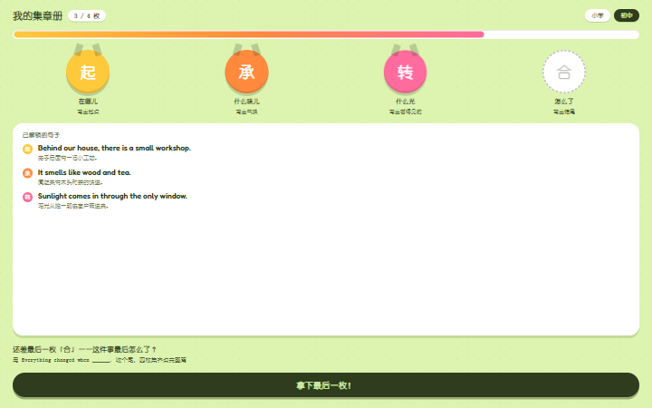
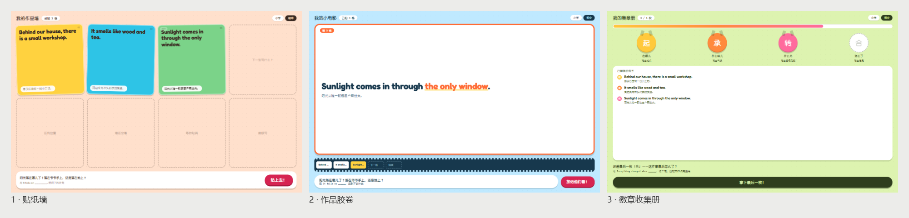
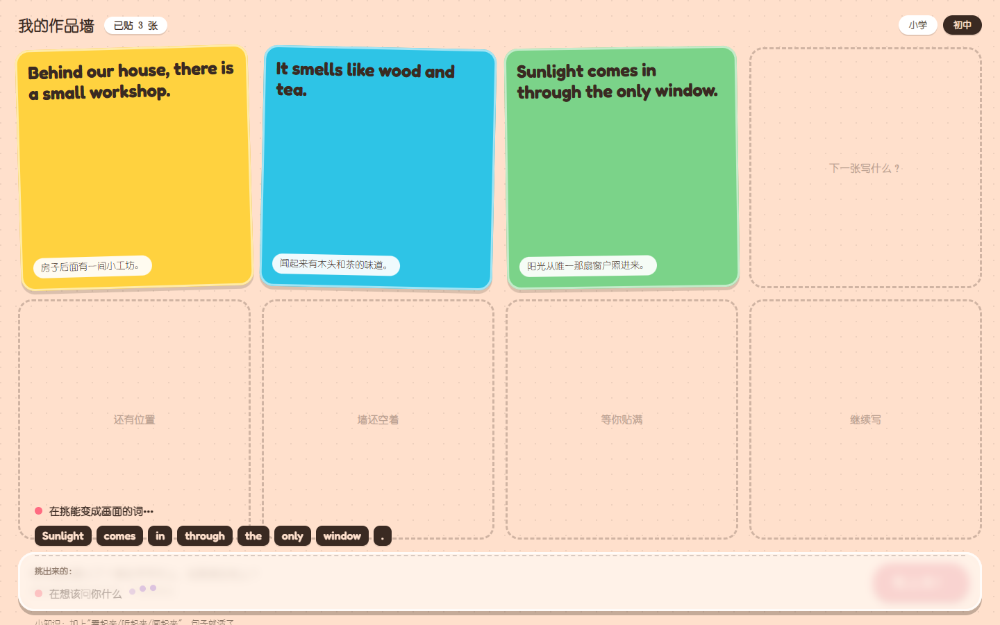
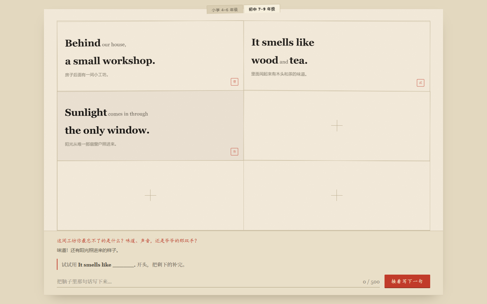
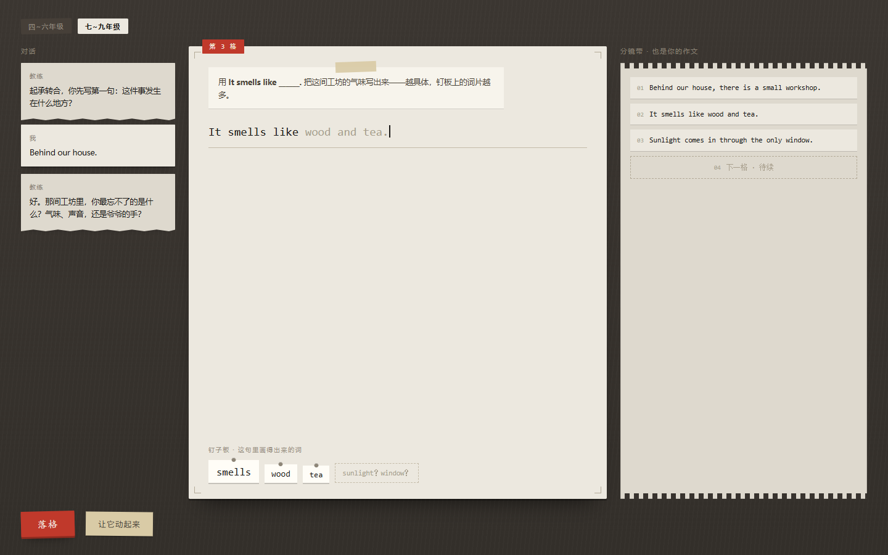
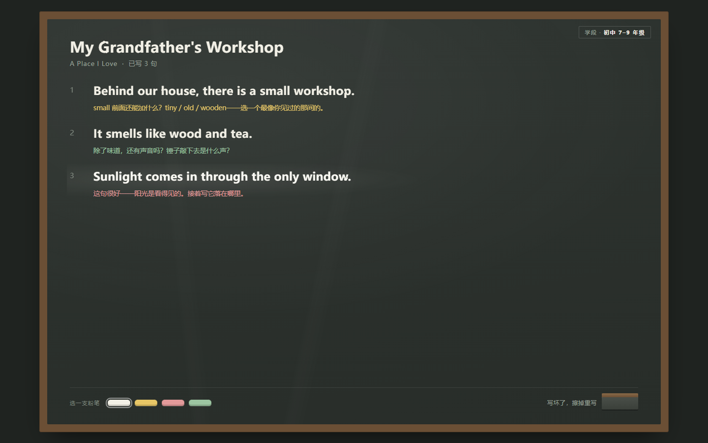

一句话状态：工程骨架已经跑通并提交；界面方向出了三套给孩子看的版本；等用户选定方向后进入正式实现。今天解决的问题是"这个产品长什么样、智能体怎么被看见"。
一、产品是什么
一个面向小学 4–6 年级与初中 7–9 年级的英语写作陪伴智能体。进入页面选学段，两套提示词工程。
它的底层逻辑是双方向，这是产品的两根支柱，缺一根就不成立：
| 方向 | 做什么 | 解决什么 |
|---|
| 正向 · 激励 |
孩子写完作文后，智能体根据作文内容改造他的文章，产出动画、绘本、漫画、小游戏等多模态成果 |
给孩子写的动力——"我写的东西变成了一个作品" |
| 反向 · 引导 |
引导孩子把自己的作文写完、写好、写完善 |
给孩子写得好的路径 |
两根支柱的咬合点：正向的成果质量取决于写作质量（写得越具体，画面越丰富），于是"想做出好作品"和"想写好作文"变成同一件事。
二、今天做完的三件事
1. 工程骨架已跑通并提交 已完成
- 单仓双包：
client/（React + Vite）+ server/（Node + Express），ESM，不用 TypeScript
- 模型调用层带超时、最多 2 次重试、降级话术——模型挂了前端不会无限转圈
- Function Calling 主循环从已部署的旧工程移植，并修掉三处硬伤（原无超时无重试、工具参数解析无保护、工具执行无异常边界）
- 学习者状态用
node:sqlite，零新增依赖
- 接口契约带能力协商（
GET /api/health 声明支持哪些模态），为以后接硬件、接音频留了口子且不需要改契约
实测结果（不是推断）
- 评测集 9/9 通过（其中不依赖模型、无 Key 也能跑）
- Key 泄露自检通过：
.env 同时被 gitignore 和 dockerignore 排除
- 全部接口端到端实测可通；前端构建通过
- 危机路径在无模型时仍返回完整引导话术——安全关键路径不押在 LLM 在线上
2. 出了三套给孩子看的视觉方向 待选定
三个方向共用同一份示例作文，只变构图、色彩、字体和交互，保证比较公平。

方向 1 · 贴纸墙
成果是一面越写越满的墙。每写完一句，这句英语就被做成一张彩色贴纸卡，「啪」地贴上墙。亮点：丰盛感最强，空格用虚线框吊胃口；五张高饱和卡片轮转配色。

方向 2 · 作品胶卷
一句一格连成胶卷，写完的句子在大银幕上放大成画面，可以「放给他们看」。亮点：唯一直接兑现"变成视频"的方向；关键词被荧光笔点亮。

方向 3 · 徽章收集册
一篇作文四枚章：起承转合。每完成一样得一枚，集齐点亮整篇。亮点：把"写完一篇"拆成四个可达的小目标，进度画成看得见的量而不是数字。

三方向并排
骨架、字体、色彩、主视觉、核心交互五项全部拉开，不是同一模板换配色。
3. 做了游戏化加载框 已完成

加载框（覆盖整块问答区，透明）
像游戏加载动画一样分四步：读你的句子 → 挑能变成画面的词 → 想该问你什么 → 想好了。带进度条、随机小知识、弹跳点。
它一次解决两个问题：
- 填满等待时间——模型思考要几秒，孩子不会干等
- 让智能体"在干活"被看见——等待时屏幕上显示的是"它在读你的句子、在挑词"，这正是评委最想看到的"智能体做了什么"，不需要口头解释
三、已否决的方向与原因
第一轮做的是成人手工美学（活版纸墨 / 分镜工作台 / 粉笔黑板），用户判定"一点都不吸引小朋友"，已否决。否决理由本身是今天最重要的产出之一：

已否决 · 活版纸墨暖纸墨字、朱砂印章。美，但是给有品位的成年人看的。

已否决 · 分镜工作台深色木台 + 等宽体。是设计师会喜欢的工作台，不是孩子会喜欢的。

已否决 · 粉笔黑板石灰板 + 粉笔。安静、庄重，离"热闹"最远。
诊断结论三个方向共享同一个病根：把"拒绝低幼"执行成了"拒绝童趣"，交付的是安静的成人高级感。
从否决里学到的、已经改掉的
- 不能没有反馈：原来写一句只是多一行字。现在每句完成都有可见的庆祝与累积。
- 不能没有成果的丰盛感：原来屏幕大半是空的。现在空格用虚线框标出来吊胃口。
- 不能是填空 worksheet：原来底部是「用
It smells like ______. 补完」——固定句型加一个空，不需要任何智能。已改为智能体读孩子的原句、挑词、据此提问。
- 色彩要大胆但有纪律：强调色控制在画面 15% 以内，不是色彩爆炸。
四、技术底数：什么验证过了，什么没有
| 项 | 状态 | 说明 |
|---|
| React + Vite + Express 骨架 | 已验证 | 构建通过、接口端到端可通 |
| 模型调用（超时/重试/降级） | 已验证 | 无 Key 时降级链路实测正常 |
| 评测集（9 条离线） | 已验证 | 9/9 通过，无 Key 可跑 |
| Key 保护 | 已验证 | gitignore + dockerignore + 提交前自检脚本 |
| 模型能否生成图片/视频 | 未验证 | 最大不确定性。用户称另有一枚 Kimi API 可覆盖全部产出形态，但尚未探测。探测脚本已写好待跑 |
| 三个视觉方向 | 待选定 | 静态首屏已出，带动效；交互与移动端未做 |
应对方式：三个视觉方向全部不押注生图/生视频 API——画面由排版、SVG 材质滤镜和浏览器能力生成。若 Kimi 验证可用，只作为增强层接入，不改变方向成立。
五、下一步
- 选定视觉方向（贴纸墙 / 作品胶卷 / 徽章收集册）——选定后才做完整页面、交互、移动端
- 跑 Kimi API 能力探测——30 分钟，决定"变成视频/绘本"是走 API 还是走代码渲染
- 按选定方向做完整页面 + 三处基本动效，然后派独立评审
- 11-07 冻结新功能，11-08 至 11-10 只做三件套打包上传